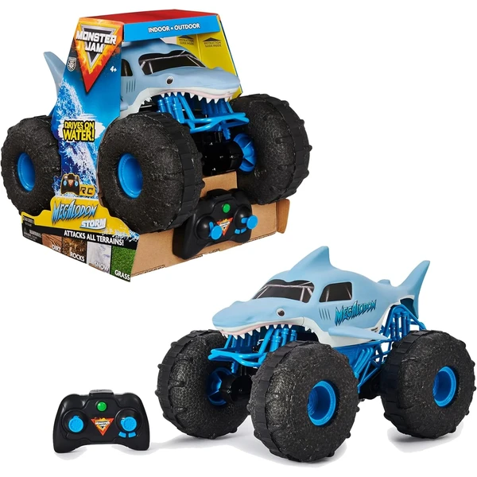

👶 5 años
Monster Jam Megalodon RC 1:15
Un monster truck teledirigido a escala 1:15 con neumáticos resistentes al agua, capaz de moverse por tierra y agua, con mando de 2,4GHz y recarga por USB.
⭐
¿Por qué nos gusta?
- ✔Circula por tierra y por agua.
- ✔Recarga por USB, sin pilas en el vehículo.
- ✔Réplica fiel del Monster Jam real.
💬
Lo que más destacan las familias
Lo que más suele gustar es poder llevarlo del salón al charco o la piscina sin que deje de funcionar, algo que sorprende gratamente a la mayoría. Que se recargue por USB también se agradece, porque evita estar pendiente de comprar pilas.